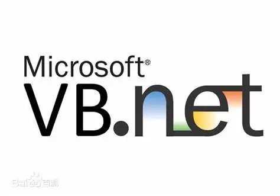

Visual Basic .NET

Visual Basic.NET（VB .NET）是基于微软.NET Framework之上的面向对象的编程语言。 VB .NET是微软在2002年开发的一种简单、高级、面向对象的编程语言。 它是Visual Basic 6.0的继承者，是在Microsoft .NET框架上实现的，支持面向对象的概念， 如抽象、封装、继承和多态性。因此，一切都在VB中进行。
发展历程
1991年4月，Visual Basic诞生，Visual Basic 1.0 Windows版本发布。 这个连接编程语言和用户界面的进步被称为Tripod（有些时候叫做Ruby）， 最初的设计是由阿兰·库珀（Alan Cooper）完成的。 1992年9月，Visual Basic 1.0 DOS版本发布。 1998年夏天，VB6.0发布。 2001年，Visual Basic .NET和.NET Framework发布。Visual Basic .NET正式诞生。 2005年，微软宣布将不会再对非.NET版本的VB进行支持。 2010年，Visual Basic .NET随Visual Studio 2010发布，不再提供单独的Visual Basic .NET IDE。
语言特点
Visual Basic .NET的应用范围包括Windows桌面、Web等。 由于改动太大，导致VB.NET对VB的向后兼容性不好，在业界引起不小的争议。 VB.NET是"...中间解释性语言“，这种说法极不准确，甚至完全错误。 可能原编辑者是指的编译器会先将源码翻译成MSIL(Microsoft Intermediate Language)中间语言这回事, 但这和”解释性语言“有很大差别。